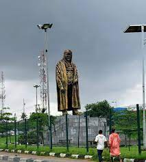

My travel tour to gani fawehinmi park in Ojota
Statue & park dedicated to an international activist of repute & defender of Rights and justice
This is a symbolic park named after the legend Chief Gani Fawehinmi, A lawyer per excellence and an advocate for the common man. Fawehinmi, popularly called Gani, was born on 22 April 1938, the son of Saheed and Munirat Fawehinmi of Ondo, in Ondo State. His father, Chief Saheed Tugbobo Fawehinmi, the Seriki Musulumi of Ondo, was a successful timber trader, philanthropist, civic activist and muslim chieftain of the Yoruba people. He was reported to be a follower of Ajao, who brought Islam to Ondo City, southwestern Nigeria. Chief Saheed Tugbobo Fawehinmi died on 5 February 1963 at the age of 89 years. Gani's grandfather was the late Chief Lisa Alujanu Fawehinmi of Ondo, who engaged in several successful battles for and on behalf of the Ondo people in the nineteenth century. Hence, the appellation the 'Alujanun', which means spirit. He died at the age of 92. Gani had his early education at Ansar-Ud-Deen Primary School, Iyemaja – Ondo from 1947 to 1953 and his secondary school education at Victory College Ikare, a Christian School from 1954 to 1958, under the leadership of the Late Rev. Akinrele where he sat for and passed his West African School Certificate Examination in 1958. While in college, he was popularly known as "Nation" because of his passionate interest in national, legal and political affairs. He was an avid reader of Daily Times and West African Pilot, the most popular newspapers in Nigeria at that time. He then worked briefly as a law clerk in the High Court of Lagos until 1961. Gani enrolled at the Holborn College of Law- University of London to read law in 1961.
Today, the park service is a melting pot for all struggles emanating in the mega city (Lagos)in 2010, a park in Ojota was named after him by the Lagos state goverment
Status and park dedicated on 2010-3-9
By Lagos state goverment
By VICTORY 2022-05-22
I went to the park to take pictures for my photography assignment. I'm really proud such size of attraction was dedicated to Gani Fawehinmi.
He was a man of honour and justice
The park had beautiful sceneries,though it needs more security,because of the Ojota opportunist. It requires maintenance too. But overall I loved it
Copyright||2022 My Travel Tour